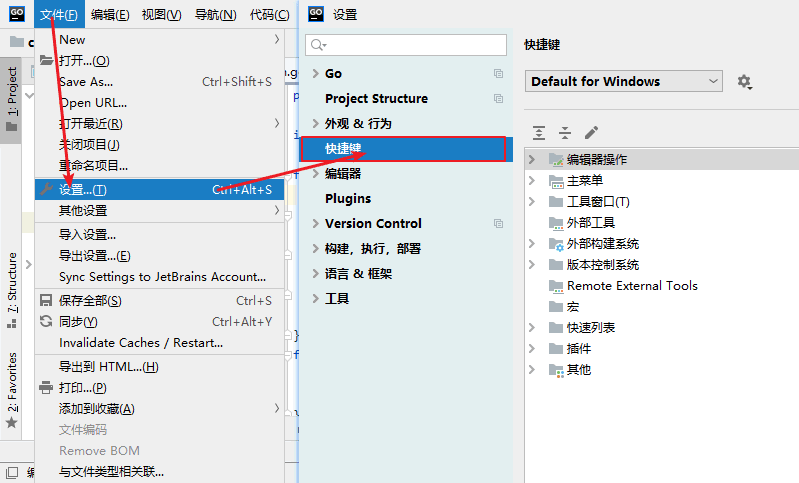

Goland常用快捷键
本节来介绍一下 Goland 中快捷键的设置以及一些常用的快捷键。
大家可以在“文件”菜单中找到“设置”，然后在新弹出的窗口选择“快捷键”选项，就可以对快捷键进行编辑了，如下图所示。
1) 文件操作相关的快捷键
2) 代码格式化相关的快捷键
3) 查找和定位相关的快捷键
4) 编辑代码相关的快捷键
5) 编辑器相关的快捷键
Goland 快捷键设置
Goland 可以模拟各种编辑器的快捷键，例如 Eclipse、Sublime Text 等。大家可以在“文件”菜单中找到“设置”，然后在新弹出的窗口选择“快捷键”选项，就可以对快捷键进行编辑了，如下图所示。

编辑快捷键
编辑快捷键
Goland 常用快捷键
下面列举了一些 Goland 中经常使用到的快捷键。1) 文件操作相关的快捷键
| 快捷键 | 作用 |
|---|---|
| Ctrl + E | 打开最近浏览过的文件 |
| Ctrl + N | 快速打开某个 struct 结构体所在的文件 |
| Ctrl + Shift + N | 快速打开文件 |
| Shift + F6 | 重命名文件夹、文件、方法、变量名等 |
2) 代码格式化相关的快捷键
| 快捷键 | 作用 |
|---|---|
| Ctrl + Alt + L | 格式化代码 |
| Ctrl + 空格 | 代码提示 |
| Ctrl + / | 单行注释 |
| Ctrl + Shift + / | 多行注释 |
| Ctrl + B 或 F4 | 快速跳转到结构体或方法的定义位置（需将光标移动到结构体或方法的名称上） |
| Ctrl +“+ 或 -” | 可以将当前（光标所在位置）的方法进行展开或折叠 |
3) 查找和定位相关的快捷键
| 快捷键 | 作用 |
|---|---|
| Ctrl + R | 替换文本 |
| Ctrl + F | 查找文本 |
| Ctrl + Shift + F | 全局查找 |
| Ctrl + G | 显示当前光标所在行的行号 |
| Ctrl + Shift + Alt + N | 查找类中的方法或变量 |
4) 编辑代码相关的快捷键
| 快捷键 | 作用 |
|---|---|
| Ctrl + J | 快速生成一个代码片段 |
| Shift+Enter | 向光标的下方插入一行，并将光标移动到该行的开始位置 |
| Ctrl + X | 删除当前光标所在行 |
| Ctrl + D | 复制当前光标所在行 |
| Ctrl + Shift + 方向键上或下 | 将光标所在的行进行上下移动（也可以使用 Alt+Shift+方向键上或下） |
| Alt + 回车 | 自动导入需要导入的包 |
| Ctrl + Shift + U | 将选中的内容进行大小写转化 |
| Alt + Insert | 生成测试代码 |
| Alt + Up/Down | 快速移动到上一个或下一个方法 |
| Ctrl + Alt + Space | 类名或接口名提示（代码提示） |
| Ctrl + P |
提示方法的参数类型（需在方法调用的位置使用，并将光标移动至( )的内部或两侧） |
5) 编辑器相关的快捷键
| 快捷键 | 作用 |
|---|---|
| Ctrl + Alt + left/right | 返回至上次浏览的位置 |
| Alt + left/right | 切换代码视图 |
| Ctrl + W | 快速选中代码 |
| Alt + F3 | 逐个向下查找选中的代码，并高亮显示 |
| Tab | 代码标签输入完成后，按 Tab，生成代码 |
| F2 或 Shift + F2 | 快速定位错误或警告 |
| Alt + Shift + C | 查看最近的操作 |
| Alt + 1 | 快速打开或隐藏工程面板 |
关注公众号「站长严长生」，在手机上阅读所有教程，随时随地都能学习。内含一款搜索神器，免费下载全网书籍和视频。

微信扫码关注公众号